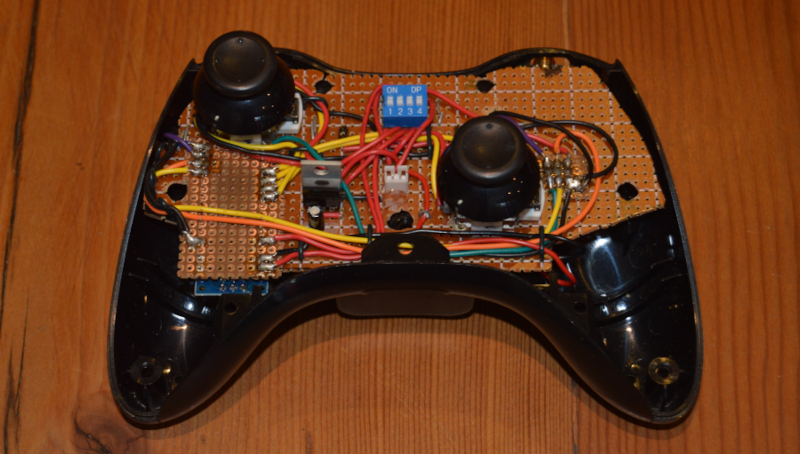

XBOX 360 Controller Converted to Drone Radio Transmitter
In this project, a broken XBOX 360 controller is converted into a fully functioning Drone Radio Transmitter. Basic I/O of the devic is handled using an Arduino Nano while an NRF24L01 module is used for the radio transmission.
Overview
A broken console controller is still very useful as long as the joysticks are working. This project discards most of the internals of the XBOX controller, but utilizes the body and the existing joysticks in an excellent display of repurposing. The components required to do this conversion are:
- XBOX 360 controller
- Proto-board
- Voltage regulator to regulate 9V battery input
- Arduino Nano (Or similar small-sized microcontroller)
- NRF24L01 RF + Antenna module
- Mechanical switches
- Connecting wire
- Relevalnt tools for soldering etc.
For the purposes of testing the completed transmitter, a receiving device is built using the following components:
- Proto-board
- Voltage regulator to regulate 9V battery input
- Arduino Nano 33 IoT for its WiFi functionality
- NRF24L01 RF Transceiver Module
The completed transmitter and receiver are shown below (Transmitter cover removed and antenna cropped out):
Build Considerations
As these console controllers are built for a specialized use-case,
there are plenty of components that cannot be reused and the first
step of the project is to seperate the useful from everything
else. As shown in the image below, the joysticks are initially
soldered onto a pcb that neatly houses all the components of the
device and the first step is to de-solder these joysticks.
To be able to reuse the housing of the controller, a piece of
proto-board needs to be cut out to match the shape of the existing
pcb, allowing the assembly to fit snugly. Next, it is important to
ensure that both joysticks line up exactly as they did initially
when they are soldered onto the proto-board.
Without getting into too much detail regarding the rest of the
build, it follows these steps:
- Mount the Arduino Nano and the NRF transmitter module in an orinentation that will allow the assembly to fit. Note how they were mounted underneath the proto-board to maximize the available space. (Arduino on the right and NRF24 on the left)
- Design and build the voltage regulator circuit for the 9V input voltage coming from the battery.
- Test the supply before connecting it to the system to avoid frying components.
- Consider where there is space available in the device and use that to route the wiring between components. 
- Build the receiver circuit (voltage regulator, arduino and receiver module) on a seperate piece of proto-board, considering which pins of the Arduino are required for I2C communication with the receiver module.
- Test all connections of the transmitter and receiver using a multimeter.
- Use the Arduino IDE to write suitable code for both Arduinos. The arduino in the transmitter needs to read the joystick inputs and communicate those values to the NRF24 transmitter module. The arduino in the receiver needs to read what is received by the transceiver module.
Testing the Transmitter
Testing is first done indoors to verify the expected behaviour. Thereafter, the same procedure is carried out in a field at increasing transmission range. Testing is done as follows:
- The receiver is placed at one side of a field and the Arduino Nano 33 IoT has an internet connection.
- The operator has the radio transmitter in hand as well as their cellphone.
- The Arduino Nano 33 Iot in the receiver uses Blynk to send the received data to the Blynk server which can be viewed on a mobile device that has an internt connection.
- As the operator moves incrementally further away from the receiver, he/she continually sends a transmissin (moves the joysticks) and watched the Blynk app on their phone to confirm that the transmission has been received.
- By repeating the above step, a maximum range can be determined for the transmitter.
Results
By repeating step 4 of the testing procedure above, it is found that the transmitter performes extremely well and at a range of 600 meters, there was no more space on that field to move further away from the receiver.
Conclusion
Although a maximum range was not found, it is confirmed to be at
least 600 meters which exceeds the requirements for this simple
hobby project. This controller is also adapted to work with drone
simulation games. One simply connects the Arduino in the
transmitter to a PC via USB.
It is planned to find a new location to test the device in the
future and find its actual maximum range. Importantly, I am also
planning to build en entire drone from scratch, implementing a PID
control system and expanding on the receiver that is already
built.
 I used an old camera tripod to mount the sensors onto, because
they needed to be held securely and all at the same height for it
to be a fair experiment. I also fixed a breadboard and the Arduino
to the tripod, because there was no need to find a more permanent
solution.
I used an old camera tripod to mount the sensors onto, because
they needed to be held securely and all at the same height for it
to be a fair experiment. I also fixed a breadboard and the Arduino
to the tripod, because there was no need to find a more permanent
solution.